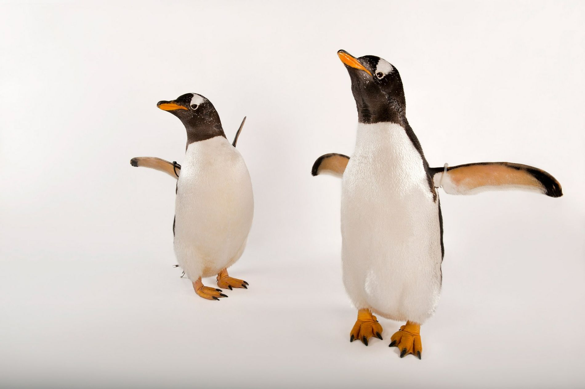

El perro (Canis familiaris o Canis lupus familiaris, dependiendo de si se lo considera una especie por derecho propio o una subespecie del lobo),123 llamado perro doméstico o can,4 y en algunos lugares coloquialmente llamado chucho,5 tuso,6 choco,7 entre otros; es un mamífero carnívoro de la familia de los cánidos, que constituye una especie del género Canis.89 En el 2013, la población mundial estimada de perros estaba entre setecientos millones y novecientos ochenta y siete millones.1011 Su tamaño (o talla), su forma y su pelaje es muy diverso y varía según la raza. Posee un oído y un olfato muy desarrollados, y este último es su principal órgano sensorial. Su longevidad media es de diez a trece años,121314 dependiendo de la raza. Junto al gato doméstico, se le considera uno de los animales de compañía más populares del mundo.

El perro doméstico proviene de un grupo ancestral común que data de hace aproximadamente treinta mil años, y desde entonces se ha extendido a todas partes del mundo.15 Los primeros restos fósiles de perros enterrados junto con seres humanos se encontraron en Israel, y datan de hace unos doce mil años.16 Desde entonces, los perros y los humanos han evolucionado conjuntamente, tanto en las culturas africanas y euroasiáticas, como en las que poblaron América y se mantuvieron sin contacto con aquellas hasta el siglo xv.17 Los perros comparten el entorno, los hábitos y el estilo de vida humanos, como las dietas ricas en cereales y almidón. La alimentación inadecuada, así como el uso de antibióticos, son la causa del desarrollo de muchas enfermedades inflamatorias e inmunológicas. Unas cuatrocientas enfermedades del perro tienen una equivalente humana, y destacan especialmente la enfermedad de Alzheimer y otros trastornos neurológicos, así como varios tipos de cáncer, enfermedades autoinmunes y enfermedades cardiovasculares.
Tienen una gran relación con los humanos, entre tales relaciones se incluyen servir como animales de compañía, animales de guardia, perros de trabajo, perros de caza, galgos de carrera, perros guía, perros pastores o perros boyeros.
Diferencias respecto a otros caninos: En comparación con lobos de tamaño equivalente, los perros tienden a tener el cráneo un 20 % más pequeño y el cerebro un 10 % más pequeño, además de tener los dientes más pequeños que otras especies de cánidos.22 Los perros requieren menos calorías para vivir que los lobos. Su dieta de sobras de los humanos hizo que sus cerebros grandes y los músculos mandibulares utilizados en la caza dejaran de ser necesarios. Algunos expertos piensan que las orejas flácidas de los perros son el resultado de la atrofia de los músculos mandibulares.22 La piel de los perros domésticos tiende a ser más gruesa que la de los lobos y algunas tribus esquimales prefieren su piel para vestirse, debido a su resistencia al desgaste en un clima inhóspito.22 A diferencia de los lobos, pero al igual que los coyotes, los perros domésticos tienen glándulas sudoríparas en las almohadillas de las patas.22 Las patas de un perro suelen ser más cortas que las de un lobo y su cola tiende a curvarse hacia arriba, otro rasgo que no se observa en los lobos.
Anatomía Externa: La enorme variedad de morfologías en las diferentes razas de perro hace difícil determinar el tamaño y el peso medios de los perros. Con una altura de entre 71 y 90 cm, el galgo irlandés es la raza más alta de perro24 —aunque algunos ejemplares de gran danés superan este tamaño, llegando hasta 107 cm—.25 La raza más pequeña de perro es el chihuahua, con un tamaño de 15-30 cm en la cruz. Con un peso medio de entre 1,5 y 3 kg —y que en algunos casos, puede no superar los 500 g—,26 los chihuahuas también son los perros más ligeros; mientras los mastines ingleses y los san bernardos son los perros más pesados, con un peso que puede llegar a más de 75 u 80 kg.
Pelaje: Al igual que los lobos, los perros tienen un pelaje, una capa de pelos que les cubre el cuerpo. El pelaje de un perro puede ser un «pelaje doble», compuesto de una capa inferior suave y una capa superior basta. A diferencia de los lobos, los perros pueden tener un «pelaje único», carente de capa inferior. Los perros con un pelaje doble, como los lobos, están adaptados para sobrevivir en temperaturas frías y tienden a provenir de climas más fríos.
Sentidos: Los sentidos del olfato y del oído del perro son superiores a los del humano en muchos aspectos. Algunas de sus habilidades sensoriales han sido utilizadas por los humanos, como por ejemplo el olfato en los perros de caza, perros buscadores de explosivos o perros buscadores de drogas. Además, son capaces de diferenciar e identificar sonidos concretos como palabras y asociarlos a estímulos externos, como por ejemplo un premio.
Vista: La visión del perro parece adaptada para la caza: No tiene gran agudeza visual de detalles, pero tienen excelente percepción de movimientos. Tiene excelente visión nocturna o crepuscular, debido al uso del tapetum lucidum —una pantalla reflectiva dentro del ojo—. El campo visual del perro se encuentra entre los 240 y los 250 grados, mucho mayor que el del ser humano que es de aproximadamente 180 grados.
Olfato: Mientras que el cerebro humano es dominado por una gran corteza visual, el cerebro canino es dominado principalmente por una corteza olfativa. El bulbo olfativo de los perros, en proporción al tamaño total del cerebro, es unas cuarenta veces mayor que el de los humanos. Según la raza, los perros tienen entre 125 y 220 millones de células olfativas extendidas sobre un área del tamaño de un pañuelo de bolsillo —en comparación con cinco millones de células extendidas sobre el área de un sello en los humanos—. Los bloodhound son la excepción, con aproximadamente 300 millones de receptores olfativos. Los perros pueden distinguir olores a concentraciones casi 100 millones de veces inferiores a las que pueden distinguir los humanos.